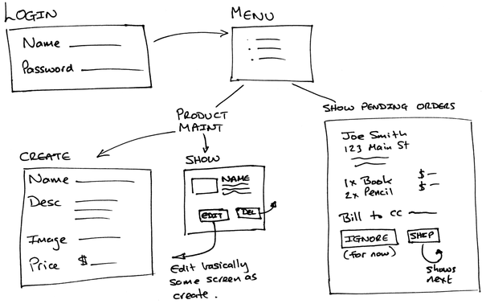
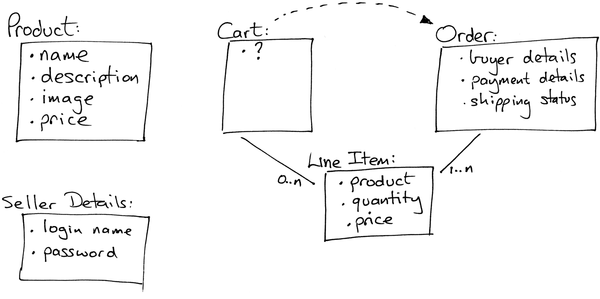

Figure 6. Flow of buyer pages
Let’s start by jotting down an outline specification for the Depot application. We’ll look at the high-level use cases and sketch out the flow through the web pages. We’ll also try working out what data the application needs (acknowledging that our initial guesses will likely be wrong).
A use case is simply a statement about how some entity uses a system. Consultants invent these kinds of phrases to label things we’ve all known all along—it’s a perversion of business life that fancy words always cost more than plain ones, even though the plain ones are more valuable.
Depot’s use cases are simple (some would say tragically so). We start off by identifying two different roles or actors: the buyer and the seller.
The buyer uses Depot to browse the products we have to sell, select some to purchase, and supply the information needed to create an order.
The seller uses Depot to maintain a list of products to sell, to determine the orders that are awaiting shipping, and to mark orders as shipped. (The seller also uses Depot to make scads of money and retire to a tropical island, but that’s the subject of another book.)
For now, that’s all the detail we need. We could go into excruciating detail about what it means to maintain products and what constitutes an order ready to ship, but why bother? If there are details that aren’t obvious, we’ll discover them soon enough as we reveal successive iterations of our work to the customer.
Talking of getting feedback, let’s not forget to get some right now—let’s make sure our initial (admittedly sketchy) use cases are on the mark by asking our user. Assuming the use cases pass muster, let’s work out how the application will work from the perspectives of its various users.
We always like to have an idea of the main pages in our applications and to understand roughly how users navigate between them. This early in the development, these page flows are likely to be incomplete, but they still help us focus on what needs doing and know how actions are sequenced.
Some folks like to mock up web application page flows using Photoshop, Word, or (shudder) HTML. We like using a pencil and paper. It’s quicker, and the customer gets to play too, grabbing the pencil and scribbling alterations right on the paper.
|
|
Figure 6. Flow of buyer pages |
The first sketch of the buyer flow is shown in Figure 6, Flow of buyer pages. It’s pretty traditional. The buyer sees a catalog page, from which he selects one product at a time. Each product selected gets added to the cart, and the cart is displayed after each selection. The buyer can continue shopping using the catalog pages or check out and buy the contents of the cart. During checkout, we capture contact and payment details and then display a receipt page. We don’t yet know how we’re going to handle payment, so those details are fairly vague in the flow.
The seller flow, shown in Figure 7, Flow of seller pages, is also fairly simple. After logging in, the seller sees a menu letting her create or view a product or ship existing orders. Once viewing a product, the seller may optionally edit the product information or delete the product entirely.
|  |
|
Figure 7. Flow of seller pages |
The shipping option is very simplistic. It displays each order that has not yet been shipped, one order per page. The seller may choose to skip to the next or may ship the order, using the information from the page as appropriate.
The shipping function is clearly not going to survive long in the real world, but shipping is also one of those areas where reality is often stranger than you might think. Overspecify it up front, and we’re likely to get it wrong. For now let’s leave it as it is, confident that we can change it as the user gains experience using our application.
Finally, we need to think about the data we’re going to be working with.
Notice that we’re not using words such as schema or classes here. We’re also not talking about databases, tables, keys, and the like. We’re simply talking about data. At this stage in the development, we don’t know whether we’ll even be using a database.
Based on the use cases and the flows, it seems likely that we’ll be working with the data shown in Figure 8, Initial guess at application data. Again, using pencil and paper seems a whole lot easier than some fancy tool, but use whatever works for you.
|  |
|
Figure 8. Initial guess at application data |
Working on the data diagram raised a couple of questions. As the user buys items, we’ll need somewhere to keep the list of products they bought, so we added a cart. But apart from its use as a transient place to keep this product list, the cart seems to be something of a ghost—we couldn’t find anything meaningful to store in it. To reflect this uncertainty, we put a question mark inside the cart’s box in the diagram. We’re assuming this uncertainty will get resolved as we implement Depot.
Coming up with the high-level data also raised the question of what information should go into an order. Again, we chose to leave this fairly open for now—we’ll refine this further as we start showing the customer our early iterations.
Finally, you might have noticed that we’ve duplicated the product’s price in the line item data. Here we’re breaking the “initially, keep it simple” rule slightly, but it’s a transgression based on experience. If the price of a product changes, that price change should not be reflected in the line item price of currently open orders, so each line item needs to reflect the price of the product at the time the order was made.
Again, at this point we’ll double-check with the customer that we’re still on the right track. (The customer was most likely sitting in the room with us while we drew these three diagrams.)